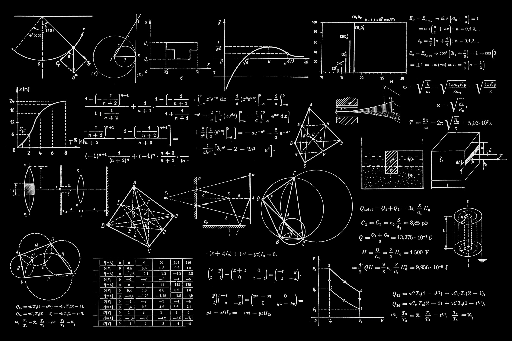

Dr. Anjali Rao
President · Board Chair
15 years at the intersection of RTOS engineering and AI accelerators. Previously led the kernel team at a major embedded vendor.

"To make state-of-the-art embedded AI infrastructure freely available to every developer, every organization, and every device — from microcontrollers to neural interfaces."
— Foundation Charter, Article I
Apache 2.0 across the entire stack. CLA opt-in. Bit-identical reproducible builds verifiable by anyone.
501(c)(3) nonprofit. Board elected by sustaining members. Every governance vote published with full member-by-member breakdown.
Working groups operate by lazy consensus with public RFCs. Anyone can join a working group; voting requires foundation membership.
Components shipping in production embedded systems across automotive, industrial, medical, consumer, and aerospace verticals.
Two-and-a-half years of milestones — from the foundation's incorporation to today.
EmbeddedOS Research Foundation files 501(c)(3) status. First three components (EoS RTOS, eBoot, eBuild) released under Apache 2.0.
12 sustaining-tier organizations join. Initial board elected. Working Groups for Safety-Certified and Documentation form.
Embedded AI runtime ships with INT8 quantized inference. Demonstrated on 4 reference boards across 3 architectures.
1024-channel deterministic spike pipeline first publicly demoed at ESWEEK 2025. Open dataset license drafted.
Meta-distribution reaches 1.0 with stable APIs, unified manifest, reproducible builds across all 14 components.
1.3B-parameter LLM at 11 tok/s on Cortex-M85. Foundation membership crosses 3,000.
The Board is elected annually by sustaining members. Working group chairs are selected by working-group consensus.
President · Board Chair
15 years at the intersection of RTOS engineering and AI accelerators. Previously led the kernel team at a major embedded vendor.
Executive Director
Foundation operations, partnerships, and program management. Background in open-source community building (LF Edge, Apache).
Chief Technology Officer
Steers the technical roadmap across all 14 components. PhD in operating systems; co-author of two ISO standards.
Director of Research
Coordinates the Neural Interface and Embedded AI Ethics working groups. Adjunct faculty at KTH Stockholm.
Director of Standards
Liaises with IEC/ISO committees and partner standards bodies. Lead author of EoS-S Safety-Certified spec.
Treasurer · Board
Foundation financial governance, member dues, grants administration. CPA with 20 years nonprofit accounting.
The foundation only works because members, contributors, and partners show up. Pick a way in.